Objectives
Move the Spacebook application from the static site into the structure provide by the Play framework. This will require installation of the framework, creation of a starter project and incorporation of the work we have already completed in the last lab.
DOS Commands
Open a command prompt on Windows. The easiest way to do this is in Windows 7 to type 'cmd' in the Search Box on the Windows start menu:

When you type it, the start menu might change to the following:

...and if you press return, then the command window itself will appear:

On Windows 8, access the desktop from the home screen, and run File Explorer (may be in the toolbar). Then select File->Open Command Prompt:

This is an alternative interface to Windows which it is important to become familiar with. In this window you can type what are sometimes called 'DOS' commands. These commands let you have a finer level of control of your PC, and are particularly important for programmers to master.
Here are some simple commands:
- dir
- list all files in a directory
- cd ..
- change to a parent directory
- cd \
- change to a specific directory
It is essential that you become adept at these commands, and a few others.
Bear in mind that these commands always have a 'current directory' in mind (a directory is another name for a folder). Try them now and see if you can 'navigate' to your web development workspace. For instance, if the folder is located as shown here:

Then the commands to get there will look like this:

If your workspace is located on another drive, the enter that drive letter first - say "G:", press return, and then try the cd and dir commands.

Note in all of the above that the 'prompt' in the command window is always showing the 'current' drive/directory.
Also, if you have a 'space' in your directory (a bad idea generally), then you will have to use quotation marks in the commands. Here is an example:

See in the above transcript that the directory name is "Web Development Workspace" - and it has been enclosed in double quotes.
In general, however, it is best to adopt the following conventions.
-
Never use spaces in directory or file names
-
Never use upper case in directory or file names
-
If you wish to use readable multiple words for a directory or file name, separate the words with '-'. e.g.
- web-development
- java-projects
Perhaps you might take this opportunity to adjust your workspace and projects to adopt the above conventions. If you do, then you will find that using DOS commands to navigate your folders will be considerably easier.
Before going on to the next step, make sure you are comfortable navigating in DOS around the file system, and in particular make sure you can navigate to your web development workspace.
Installing and Running Play
Windows
Visit the following site:
In particulular, vist the download page:
On the this page, select and download play-1.3.0.zip (the version number is very important)
Unzip to somewhere on your PC - a good location might be:
C:\dev
Once you have unzipped it, the folder might look like this:
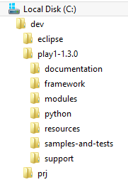
In the above, the play archive has been downloaded and expanded in c:\dev
See if you can put the folder is on your path. Detailed setup instructions are here for platforms other than Windows:
Here is a shortened guide which may suffice:
Mac/linux Users
Create or edit a file called .bash_profile in your home directory and set the path to include the extracted archive on the path. It might look like this:
PATH=$PATH:\
$HOME/dev/play-1-1.3.0
export PATH
This assumes you extracted the play archive into the dev folder.
Windows
For Windows machine, you need to do the following:
Locate the "Computer" icon in explorer

Right click on this and select 'Properties':

Select 'Advanced System Settings':

Select 'Environment Variables':

Under "System Variables", locate and select the 'Path' entry:

Edit this entry, and append the path in which play is installed. This should be C:\dev\play-1-1.3.0:

NB: DO NOT DELETE THE CURRENT VALUE OF THE PATH! You are trying to append on to the end of the string in there already.Note that a ; separates this new entry from the last one.
Press "Ok" all the way back and rerun the command prompt (close the one already open)
To test, just type "play" from a command prompt you should see something like this:
~ _ _
~ _ __ | | __ _ _ _| |
~ | '_ \| |/ _' | || |_|
~ | __/|_|\____|\__ (_)
~ |_| |__/
~
~ play! 1.3.0, http://www.playframework.org
~
~ Usage: play cmd [app_path] [--options]
~
~ with, new Create a new application
~ run Run the application in the current shell
~ help Show play help
Or, if you did not manage to get the play folder on the path, then this command here should work (if you used the recommended folder structure)
C:\dev\play1-1.3.0\play
However, it is best to ensure that the play command is on the system path.
Create a Play/Eclipse Project
Static version of Spacebook
Before we get in to creating a play project, we need to bring in a sample web project we will use for some raw material.
You may already have a project called 'lab05-spacebook' in your workspace from an earlier lab:
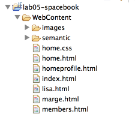
If you dont, download this archive here:
Unzip this into your workspace, and then 'Import' the project into eclipse. (In eclipse, select File->Import->General->Existing Projects into Workspace... browse to and locate the above project).
Dynamic version of Spacebook
Back in the command line, you will need to navigate to your web development workpace. This might lead you somewhere like this:

Now create a new project by typing the following:
play new spacebook
You should get:
~ _ _
~ _ __ | | __ _ _ _| |
~ | '_ \| |/ _' | || |_|
~ | __/|_|\____|\__ (_)
~ |_| |__/
~
~ play! 1.3.0, http://www.playframework.org
~
~ The new application will be created in /Users/edeleastar/Dropbox/webdev/2012/dev/projects/spacebook
~ What is the application name? [spacebook]
Press return when prompted for the name to accept the default (spacebook)
~
~ OK, the application is created.
~ Start it with : play run spacebook
~ Have fun!
~
In DOS it might look like this:

Explore the generated folder - called 'spacebook'. It should contain six folders app conf lib public * test We can import this project into eclipse. First, change into the spacebook folder
cd spacebook
Then run this command:
play eclipsify
The system will respond with:
~ _ _
~ _ __ | | __ _ _ _| |
~ | '_ \| |/ _' | || |_|
~ | __/|_|\____|\__ (_)
~ |_| |__/
~
~ play! 1.3.0, http://www.playframework.org
~
~ OK, the application is ready for eclipse
~ Use File/Import/General/Existing project to import /Users/edeleastar/Dropbox/webdev/2012/dev/projects/spacebook into eclipse
~
~ Use eclipsify again when you want to update eclipse configuration files.
~ However, it's often better to delete and re-import the project into your workspace since eclipse keeps dirty caches...
~
The above sequence might look like this in DOS:

Now, launch eclipse - in the usual way. In eclipse, select "File->Import->General->Existing Projects into Workspace" and navigate to the folder containing the spacebook application just generated.

Once imported into eclipse, the project should look like this:

The project may not look like this initially. If it doesnt, then switch to the "Java Perspective" in Eclipse, and it should resemble the above. To switch perspectives - in eclipse select "Window->Open Perspective->Java"
Running an Play Application
Back in DOS, from inside the spacebook folder, type the following command:
play run
Play will respond with something like this:
~ _ _
~ _ __ | | __ _ _ _| |
~ | '_ \| |/ _' | || |_|
~ | __/|_|\____|\__ (_)
~ |_| |__/
~
~ play! 1.3.0, http://www.playframework.org
~
~ Ctrl+C to stop
~
Listening for transport dt_socket at address: 8000
16:30:33,586 INFO ~ Starting /Users/edeleastar/Dropbox/webdev/2012/dev/projects/spacebook
16:30:34,646 WARN ~ You're running Play! in DEV mode
16:30:34,894 INFO ~ Listening for HTTP on port 9000 (Waiting a first request to start) ...
16:30:58,912 INFO ~ Application 'Spacebook' is now started !
You may get a dialog from the firewall, asking for permission to run, which you should agree to.
Now run the browser, and navigate to:
you should see something like this:

Also notice that a log message will appear in the command window indicating that the app has started:
16:30:58,912 INFO ~ Application 'Spacebook' is now started !
To stop the application, press "Control+C" in the command prompt. If you refresh the browser window, then you should now get an error
Start the app again by typing 'play run' as above. Verify that the app has started by browsing/refreshing to:
Try this a few times to get used to starting/stopping the application
Introducing some Content
In Eclipse, open the java class "Application.java" - which is in the 'controllers' package located within the folder app:
package controllers;
import play.*;
import play.mvc.*;
import java.util.*;
import models.*;
public class Application extends Controller
{
public static void index()
{
render();
}
}
Now open the file 'index.html' in the 'views/Application' folder:
#{extends 'main.html' /}
#{set title:'Home' /}
#{welcome /}
When you open this file, you may get am "Unsupported Character Encoding" message. If this happens, select 'UTF-8'.
Let us change the title to be "Spacebook", and replace the 'welcome' line with our own greeting:
#{extends 'main.html' /}
#{set title:'Spacebook' /}
<p>
Welcome to Spacebook!
</p>
Save the file in Eclipse, and reload this page:
which you may already be browsing.
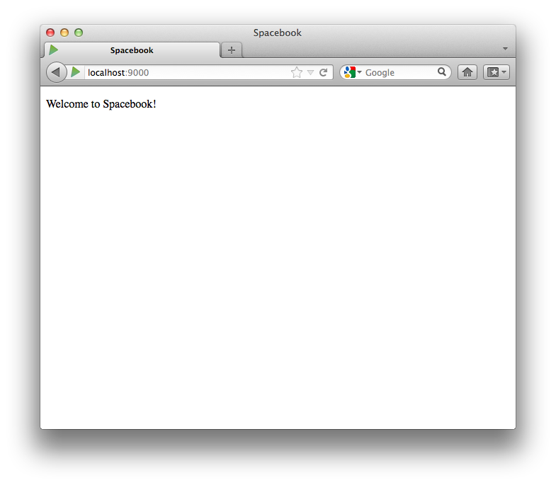
In the browser, right click and 'view source'. Look carefully at the page source - which should be something like this:
<!DOCTYPE html>
<html>
<head>
<title>Spacebook</title>
<meta charset="utf-8">
<link rel="stylesheet" media="screen" href="/public/stylesheets/main.css">
<link rel="shortcut icon" type="image/png" href="/public/images/favicon.png">
</head>
<body>
<p>
Welcome to Spacebook!
</p>
<script src="/public/javascripts/jquery-1.6.4.min.js" type="text/javascript" charset="utf-8"></script>
</body>
</html>
This single page displayed in the browser is generated from two pages in the project
views/main.html
<!DOCTYPE html>
<html>
<head>
<title>#{get 'title' /}</title>
<meta charset="${_response_encoding}">
<link rel="stylesheet" media="screen" href="@{'/public/stylesheets/main.css'}">
#{get 'moreStyles' /}
<link rel="shortcut icon" type="image/png" href="@{'/public/images/favicon.png'}">
</head>
<body>
#{doLayout /}
<script src="@{'/public/javascripts/jquery-1.6.4.min.js'}" type="text/javascript" charset="${_response_encoding}"></script>
#{get 'moreScripts' /}
</body>
</html>
and
views/Application/index.html
#{extends 'main.html' /}
#{set title:'Spacebook' /}
<p>
Welcome to Spacebook!
</p>
See if you can figure out how they are related. This will be a challenge for the moment, but there are certain clues - particularly the this line:
#{doLayout /}
in main.html.
Play Project Layout
We can start the process of making our site 'dynamic'. This means that the pages will be composed of multiple fragments, as opposed to the single 'static' pages we have been constructing to date.
Look again at our static site, as we may have left it in an earlier lab:
Before we do that, however, parts of our site are already available, namely the 'semantic ui' framework files (css, js and image files). These can be directly copied over into our new project. They will reside in the 'public' folder.
You should already have these files in the lab05-spacebook project, so copy and paste the 'semantic' folder directly into the public folder of the spacebook project (not drag and drop, as they will be deleted from the lab05-spacebook project).
This is the lab05-spacebook project here if you need it:
Aim to have the spacebook project looking like this:
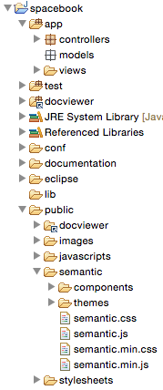
The above change will require one further adjustment. Open the file 'app/views/main.html'. The first time you open this file, eclipse may have difficulty reading it, presenting this screen:
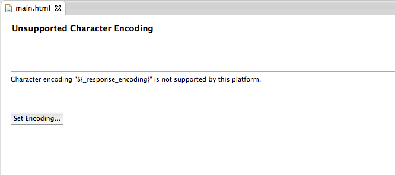
Select 'other' and then 'UTF-8' from the drop down:
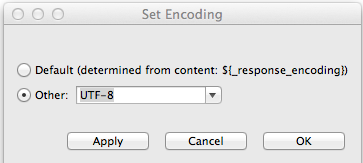
main.html should now be visible:
<!DOCTYPE html>
<html>
<head>
<title>#{get 'title' /}</title>
<meta charset="${_response_encoding}">
<link rel="stylesheet" media="screen" href="@{'/public/stylesheets/main.css'}">
#{get 'moreStyles' /}
<link rel="shortcut icon" type="image/png" href="@{'/public/images/favicon.png'}">
</head>
<body>
#{doLayout /}
<script src="@{'/public/javascripts/jquery-1.6.4.min.js'}" type="text/javascript" charset="${_response_encoding}"></script>
#{get 'moreScripts' /}
</body>
</html>
Replace this complete contents with the following:
<!DOCTYPE html>
<html>
<head>
<title>#{get 'title' /}</title>
<meta charset="${_response_encoding}">
<link rel="stylesheet" media="screen" href="@{'/public/stylesheets/main.css'}">
#{get 'moreStyles' /}
<link rel="shortcut icon" type="image/png" href="@{'/public/images/favicon.png'}">
<link rel="stylesheet" media="screen" href="@{'/public/semantic/semantic.min.css'}">
</head>
<body>
<div class="ui segment">
#{doLayout /}
</div>
<script src="@{'/public/javascripts/jquery-1.6.4.min.js'}" type="text/javascript" charset="${_response_encoding}"></script>
<script src="@{'/public/semantic/semantic.js'}" type="text/javascript" charset="${_response_encoding}"></script>
#{get 'moreScripts' /}
</body>
</html>
Run the app now with this revised styling. To run a play app, we must have a command prompt running, and be 'in' the folder containing the project. Then we just type:
play run
and browse to:
To see the app in action.
While in the browser (Chrome preferably), we can switch between browsing the site - which looks like this:
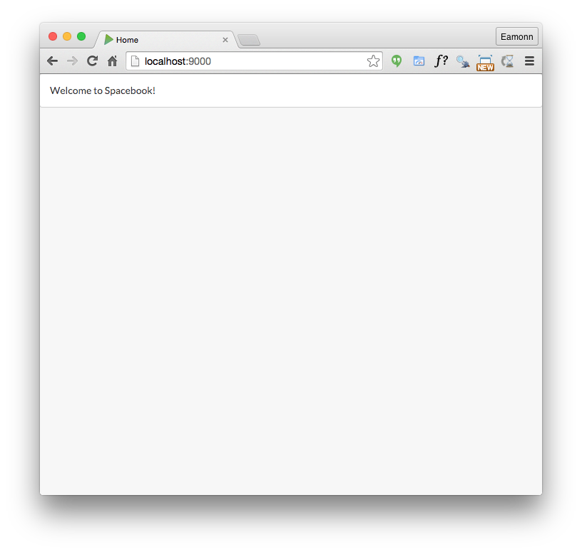
and browsing the 'source. To do this, placing the mouse on the canvas, right click and select 'View Page Source'

You will be doing this occasionally during when building web apps. Compare the <head> of this page with the html we pasted into main.html. See if you can analyse precisely the differences. They are small and will seem very obscure (for the moment).
Navbar
Reflect again on the site we have already built:
Instead of thinking of the site as a set of files on disk, currently structured thus in the 'static' project:
We take a logical view, and think of the site as something constructed out of 'parts'. These may be
- Header
- Navigation bar
- Body
Furthermore, we consider that we have several versions of the 'body', one each for:
- Home
- Members
- HomeProfile
- User Profiles for marge and lisa, and any other user
Lets start with the navbar - this is the one we used in the static version:
<nav class="ui menu">
<a class="ui item" href="home.html">Home</a>
<a class="ui item" href="members.html">Members</a>
<a class="ui item" href="homeprofile.html">Profile</a>
<a class="ui item" href="login.html">Logout</a>
</nav>
Now, in 'app/views/Application/index.html', include this navbar directly after the title:
#{extends 'main.html' /}
#{set title:'Home' /}
<nav class="ui menu">
<a class="ui item" href="home.html">Home</a>
<a class="ui item" href="members.html">Members</a>
<a class="ui item" href="homeprofile.html">Profile</a>
<a class="ui item" href="login.html">Logout</a>
</nav>
<p>
Welcome to Spacebook!
</p>
Save these files and, if your app is still running, refresh the page:
Our nav bar should have appeared:
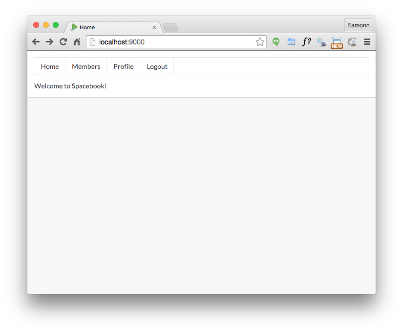
Look carefully at the 'source' (in chrome) of this page:
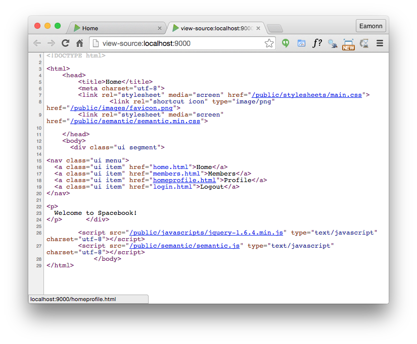
Try the navbar links - you will note that get an error for each of them, something like:
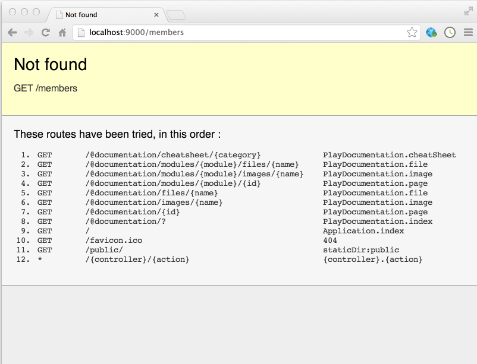
Will will fix these in the next step.
Controller & Views
Controllers
Review again the class 'controllers/application.java'
package controllers;
import play.*;
import play.mvc.*;
import java.util.*;
import models.*;
public class Application extends Controller
{
public static void index()
{
render();
}
}
We would like to create 4 copies of this file - each one identical, but named as follows:
- Home
- Members
- Profile
- PublicProfile
There are a number of ways of doing this. The simplest might be to select 'Application.java' in eclipse and select 'Edit->Copy', then select 'Edit-Paste'. In the ensuing dialog, enter one of the names above (including the capitalisation). If this goes according to plan, you might have a project looking like this:

Views
Now we look at the view : views/Applications/index.html:
#{extends 'main.html' /}
#{set title:'Spacebook' /}
<nav class="ui menu">
<a class="ui item" href="home.html">Home</a>
<a class="ui item" href="members.html">Members</a>
<a class="ui item" href="homeprofile.html">Profile</a>
<a class="ui item" href="login.html">Logout</a>
</nav>
<p>
Welcome to Spacebook!
</p>
We need to make an important adjustment to this view - change the <nav> element to look like this:
<nav class="ui menu">
<a class="ui item" href="/home">Home</a>
<a class="ui item" href="/members">Members</a>
<a class="ui item" href="/profile">Profile</a>
<a class="ui item" href="/login">Logout</a>
</nav>
(Note the changes to the href attribute)
We would now like to do the same for the 'views/Application/index.html' file. i.e. create 4 folders named
- Home
- Members
- Profile
- PublicProfile
.. again, each folder containing a file called 'index.html'. You could use the same technique as above (Edit/Copy - Edit/Paste). Your project should be looking like this:
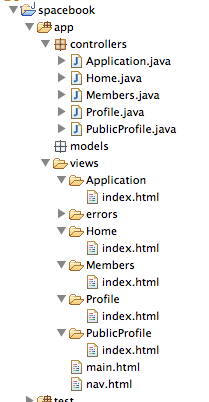
Finally, delete the Application controller + Application view folder - leaving you application like this:
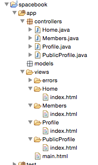
Routes
In order for the app to function correctly - we need one more change. Locate and open the file 'conf/routes':
# Routes
# This file defines all application routes (Higher priority routes first)
# ~~~~
# Home page
GET / Application.index
# Ignore favicon requests
GET /favicon.ico 404
# Map static resources from the /app/public folder to the /public path
GET /public/ staticDir:public
# Catch all
* /{controller}/{action} {controller}.{action}
Edit the file to look like this:
# Routes
# This file defines all application routes (Higher priority routes first)
# ~~~~
# Landing page
GET / Home.index
# Home page
GET /home Home.index
# Members page
GET /members Members.index
# Profile page
GET /profile Profile.index
# Ignore favicon requests
GET /favicon.ico 404
# Map static resources from the /app/public folder to the /public path
GET /public/ staticDir:public
# Catch all
* /{controller}/{action} {controller}.{action}
Each of your view files contains a :
..
<p>
Welcome to Spacebook!
</p>
Change the message for each page - so that a different welcome message appears:
- 'Welcome to the Spacebook Home Page'
- 'Welcome to the Spacebook Members Page'
- 'Welcome to the Spacebook Profile Page'
Do this by editing each of the index.html pages as appropriate
Now, restart the app. To restart it bring up the command prompt that launched the application, and type Ctrl-C. Then type 'play run' again.
Browse to:
to see the updated app in action. The navigation bar should now function without errors (except for logout item).
Finally, note that each index.html page contains the following near the top:
#{set title:'Home' /}
Change this such that each page has its own title:
- Home
- Members
- Profile
Note that this text will appear in the browsers window title - not on the canvas. Run the app and verify that this behaves as expected.
Exercises
Exercise 1: Active Tab
If you look at the nav bar you will notice that there is no concept of an 'active' tab as such. i.e. user cannot clearly see which tab they have just selected.
The reason of this is that none of the <li> elements are have class="ui active item" (check the lab05-project to see what this looks like).
<nav class="ui menu">
<a class="ui active item" href="/home">Home</a>
<a class="ui item" href="/members">Members</a>
<a class="ui item" href="/profile">Profile</a>
<a class="ui item" href="/login">Logout</a>
</nav>
See if you can make the necessary changes so that each menu item is activated appropriately.
Exercise 2: Alternative Menu Styles
The Semantic UI framework has many easy to use and interesting menu variations:
See if you can trigger some of these styles. Try to get 'inverted' menus working for instance.
2: Import Lab Solution into Eclipse
This is a solution to the lab:
Download and extract this archive somewhere suitable on your PC. Make sure you know where! Once extracted, navigate to that folder in a Command Prompt. Then, type:
play eclipsify
You should get a suitable message. Back in eclipse, select 'File-Import->General->Existing project into workspace' and select the folder containing the project you have just extracted. Select the project and it will become another project in your workspace called 'spacebook-baseline'
Explore and run the project. It should be more or less the same as the one you have been building in this lab. Keep this project - and the solutions to each lab from now on - in your workspace alongside the version you will be evolving each week.